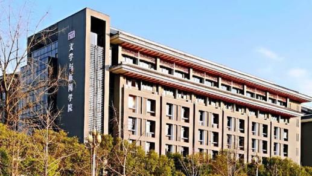

学院通知 · 科研创新
四川大学第十三届全球青年学者论坛——文学与新闻学院分论坛诚邀您参加
发布时间：2025-10-25
一、论坛安排 四川大学主论坛： 2025 年 11 月 27 日 文学与新闻学院分论坛 ： 2025 年 11 月 28 日 论坛形式：线上线下相结合 二、学院简介 四川大学文学与新闻学院具有悠久的历史，最早可追溯到四川大学的前身锦江书院（ 1704 年）和尊经书院（ 1875 年）。 1896 年，作为四川大学创办起始的四川中西学堂，中文学科是其主要学科之一。文学院历任院长有向楚、朱光潜等学术名家，曾任中文系主任的有谢无量、刘大杰、潘重规、杨明照等著名学者。 20 世纪 50 年代院系调整，撤院建系。 1979 年获批准设立新闻学专业，是我国改革开放后第一批批准成立的三个新闻学专业点之一。 1994 年恢复文学院； 1998 年，原四川大学文学院中文系与原四川大学新闻学院合并，组建成四川大学文学与新闻学院。 2013 年，学院进入首批十所中宣部、教育部与地方宣传部门共建（“部校共建”）新闻学院序列，成立四川大学新闻学院。 2022 年，学院入选全国首批五所出版学科共建单位，成立四川大学出版学院。 学院是四川大学文科教学和科学研究实力最雄厚的学院之一。以建设高水平研究型大学、培养高层次人才为目标，形成包括本科、硕士、博士和博士后各种层次的办学体系。学院有中国语言文学、新闻传播学、艺术学理论三个一级学科，其中中国语言文学是全国首批一级学科国家重点学科（全国共 5 个，四川大学文科唯一）。 2017 年，以中国语言文学和新闻传播学两个一级学科为主干学科的“中国语言文学与中华文化全球传播”学科群进入四川大学重点建设的 12 个一流学科（群）。在第五轮教育部学科评估中，中国语言文学学科等级为 A + ，新闻传播学学科等级为 B ＋。 学院师资力量雄厚，现有教职工 188 人，其中国家级人才 28 次，包括四川大学杰出教授 1 人、欧洲科学与艺术院院士 1 人、文科讲席教授 3 人、教育部重要人才计划及领军人才 13 人、国家级教学名师 2 人、全国模范教师 1 人、国家“四青”人才 7 人、中宣部宣传思想文化青年英才 1 人等高层次人才。 学院现有部委级科研平台 4 个，分别是教育部人文社科重点研究基地中国俗文化研究所、中华多民族文化凝聚与全球传播省部共建协同创新中心、汉语应用与规范研究基地、中华优秀传统文化传承基地巴蜀文化基地；省级科研平台 6 个，四川省重点文科实验室 1 个。 2020 年至今，学院获批国家社科基金项目 82 项，其中重大项目 10 项，重点项目 11 项（含冷门绝学专项 3 项），立项数居全国同类院校前列。目前由学院牵头的 国家 “ 十四五 ” 哲学社会科学重大学术和文化工程《汉语大字典》修订工程 正稳步推进。历年来，学院获教育部高等学校人文社科优秀成果评奖一等奖 6 项，二等奖 16 项，三等奖 15 项，青年奖 1 项，普及读物奖 1 项。 三、学科建设 学院中国语言文学一级学科现为国家一级重点学科，在第五轮教育部学科评估中等级为 A + ，同时也是国家文科基础学科人才培养和科学研究基地、教育部拔尖学生培养基地、 “强基计划”（古文字方向），设有汉语言文学、汉语国际教育 2 个国家级一流本科专业，中国语言文学一级学科博士学位授权点和中国语言文学博士后科研流动站，以及国际中文教育硕士（ MTCSOL ）专业学位授权点，同时设有教育部高等学校人文社会科学重点研究基地中国俗文化研究所、中华多民族文化凝聚与全球传播省部共建协同创新中心、四川省哲学社会科学重点研究基地比较文学研究基地及苏轼研究中心、四川省“ 2011 计划”中国多民族文化凝聚与国家认同协同创新中心和四川省哲学社会科学重点实验室中华文化传承与全球传播数字融合重点实验室等重点科研基地。本学科办有十多种学术刊物，主办的学术集刊《中外文化与文论》《汉语史研究集刊》《中国现代文学与文化》《阿来研究》为 CSSCI 来源集刊，并办有全英文国际期刊 Comparative Literature: East and West 、 Literature and Modern China ，形成的学术刊物集群成为本学科领域重要的学术成果发布平台和学术交流阵地。 新闻传播学一级学科为四川省重点一级学科，设有新闻学、广告学、网络与新媒体等 3 个国家级一流本科专业，新闻传播学一级学科博士学位授权点和新闻传播学博士后科研流动站，以及新闻与传播硕士（ MJC ）、出版硕士（ MP ） 2 个专业学位点，还设有四川省哲学社会科学重点研究基地社会舆情与信息传播研究中心、共建 3 个国家新闻出版署行业重点实验室等平台，主办的中英双语学术期刊《符号与传媒》（ Signs & Media ）、与四川日报报业集团共建的学术期刊《新闻界》均为 CSSCI 来源刊物。 艺术学理论为一级学科博士学位授权点， 2 019 年获批设立博士后科研流动站，下设比较艺术学、艺术理论与批评、文化遗产与艺术人类学、艺术生产与文化产业、影视艺术学等二级学科方向。 四 、人才需求 1. 顶尖人才 在服务国家重大战略需求和经济社会发展等方面发挥重大作用，承担国家重大战略任务和 “ 双一流 ” 建设重要任务，具有带领学科赶超或引领国际先进水平能力的战略科学家和学术大师。 2. 领军人才 在科学研究方面取得国内外同行公认的重要成就，在学科建设、人才培养、科学研究等方面做出重大贡献的学科带头人、知名专家。 3. 海纳青年人才 取得重要标志性研究成果，具有成为该领域学术带头人或杰出人才发展潜力的优秀青年人才。 4. 特聘（副）研究员 在所从事研究领域崭露头角，具有较强的创新发展潜力，包括世界一流大学或一流学科博士后、发达国家和地区博士后、其他海外人才和部分特殊海外人才等。 5. 博士后 年龄不超过 35 岁；具有国内外高水平大学博士学位，有良好的科学研究经历和教育背景，符合岗位要求的资格条件和工作能力。 学校提供有竞争力的薪酬待遇、科研启动经费和住房待遇，并在养老、医疗、安家、签证、子女教育等生活方面给予保障。 五、报名流程 （ 1 ）主论坛扫描二维码进行报名 （ 2 ）分论坛报名流程 请将个人简历发送至电子邮箱 wxbangongshi@sina.com ，简历命名方式为 “青年论坛－姓名－意向职位－学科方向－线上 / 线下”。线下参会者报名截至 11 月 15 日，线上参会者报名截至 11 月 20 日。 联系人： 史老师、银老师 联系电话： 028-85993668 、 028-85990998 联系邮箱： wxbangongshi@sina.com
